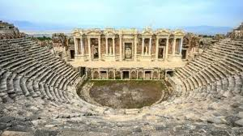
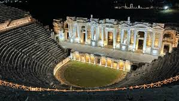

Hierapolis antik kentiyle ilgili en eskiye dayalı bilgi M.Ö. 1900’lü yıllarda burada Luvi soyunun yaşamış olmasıdır. Daha sonra bölgede Frigler, Lidyalılar ve Persler hüküm sürmüş, ancak kentin ana çekirdeği esas olarak Frigler döneminde oluşmuştur Kentin Bergama Kralı II. Eumenes tarafından kurulduğu ve Bergama’nın kurucusu Telephos’un karısı Hiera’dan dolayı Kentin Hierapolis adını aldığı da sanılmaktadır.


 "Denizli"ye dönmek için basın
"Denizli"ye dönmek için basın